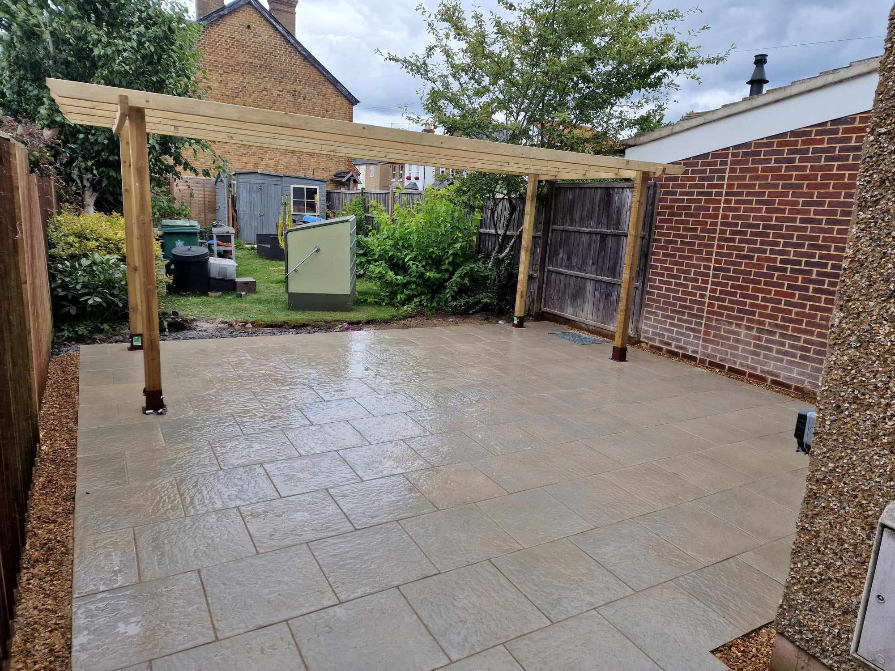

If you are planning to upgrade your garden in Wokingham, Marlow, Windsor, or across Berkshire this year, porcelain paving is almost certainly at the top of your list. It has quickly overtaken traditional Indian sandstone as the most requested patio material in the Thames Valley.
However, when asking local builders for quotes, prices can vary wildly from £90/m² to over £240/m². Why is there such a massive gap? And what is a realistic, honest price to pay for a patio that won't sink, crack, or rock in three years' time?
In this guide, we break down exact 2026 installation costs, what goes into the labor, and why the sub-base is the most important part of your investment.
Average Porcelain Patio Costs in Wokingham (2026 Price Table)
In 2026, a fully installed 20mm vitrified outdoor porcelain patio in Berkshire ranges between £140 and £210 per square metre (m²), including ground excavation, skip waste removal, sub-base compaction, slurry primer, mortar bedding, and resin jointing.
What Is Included in a Professional Porcelain Quote?
If you receive a quote that seems unusually cheap (under £110/m²), the contractor is almost always cutting corners on the foundation. When Revvi Driveways installs a porcelain patio in Wokingham or Marlow, the price includes:
- Excavation to 150mm – 200mm Depth: Ripping out old grass, dirt, or cracked concrete.
- Geotextile Membrane: Prevents clay subsoil from mixing with the aggregate base over winter.
- 100mm Compacted MOT Type 1 Sub-Base: Crushed stone compacted with a heavy mechanical wacker plate in layers.
- Full Mortar Bed (40mm – 50mm): A 5:1 sharp sand and cement mix. (We NEVER use the 'dot-and-dab' spot bedding method which causes rocking and water pooling).
- Polymer Slurry Primer: Because vitrified porcelain absorbs under 0.05% moisture, mortar cannot physically stick to the back of a porcelain slab. A specialist SBR polymer slurry bonding bridge must be painted on the back of every single slab before laying.
- All-Weather Resin Jointing: High-strength exterior grout that resists weed growth, power-washing blowouts, and frost cracks.
⚠️ Beware the "Dot-and-Dab" Trap
Some rogue tradesmen lay porcelain slabs on 5 small lumps of mortar (dot and dab) to save time and cement. Within 12 months, rainwater collects in the hollow voids underneath. In winter, this water freezes, expands, and snaps the porcelain slabs clean in half. Always insist on a 100% full mortar bed with slurry primer.
Porcelain vs Indian Sandstone: Which Is Right for You?
What Factors Increase the Cost of a Patio?
- Side Access & Waste Removal: If your garden has narrow side gates or requires carrying 15 tonnes of waste through a garage by hand, manual barrowing adds labor time compared to wide digger access.
- Ground Slope & Stepped Retaining Walls: Sloping gardens across Marlow or Cookham often require stepped tiered patios and retaining brickwork to create a level entertaining terrace.
- Integrated Drainage Channels: If the patio slopes towards your home foundation, ACO drainage channels and connection into a soakaway must be installed to comply with UK Building Regulations.
- Slab Choice: High-end Italian porcelain (£55–£75/m² supply only) costs more than entry-level imported porcelain (£28–£38/m²).
Get a Fixed-Price Porcelain Patio Quote in Wokingham
Mike will visit your property in Wokingham, Marlow, or Windsor, measure your exact square meterage, inspect site drainage, and bring physical porcelain slab samples.